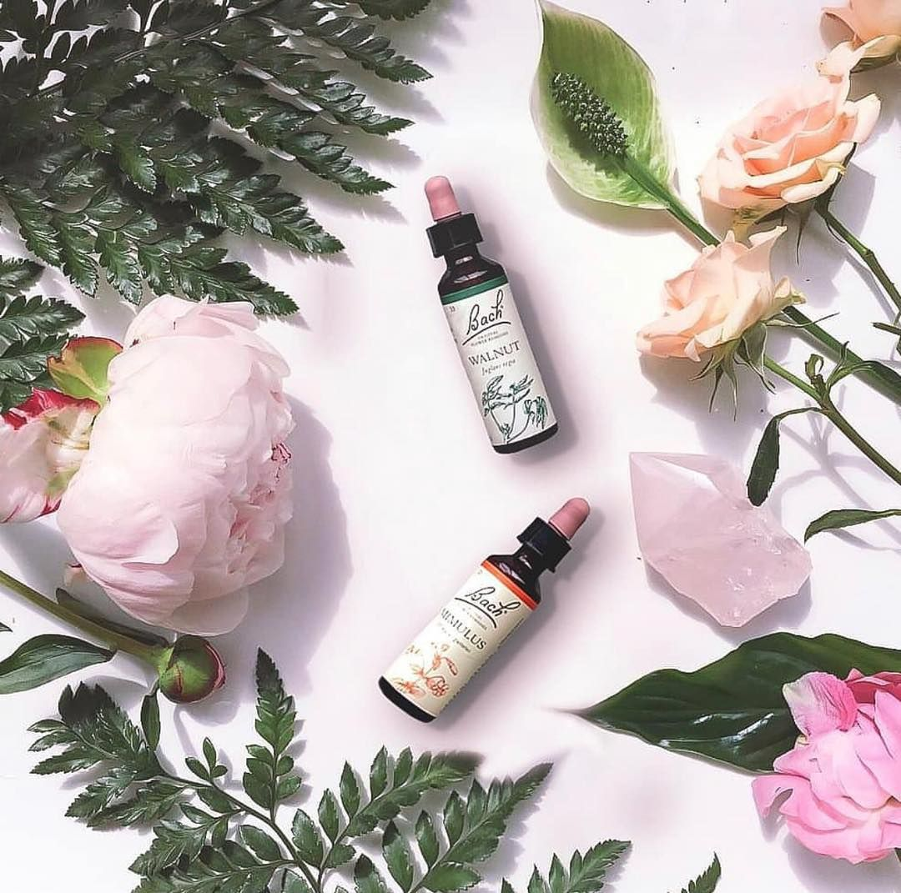
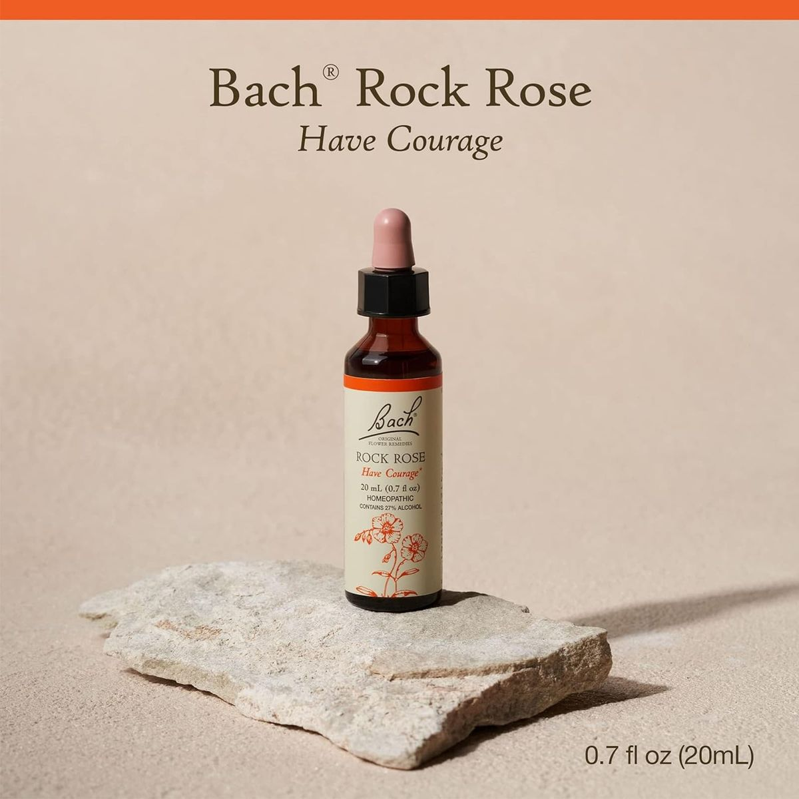
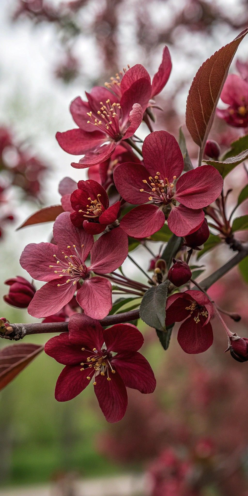
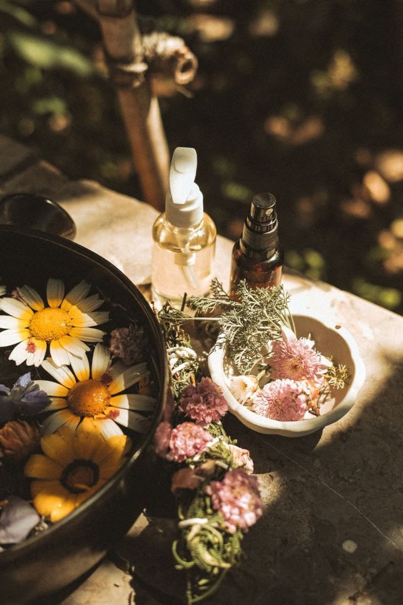

Terapia floral
Florais de Bach
Essências extraídas de flores silvestres, usadas há quase um século para apoiar estados emocionais como medo, insegurança e exaustão, sem cheiro, sabor perceptível ou efeitos colaterais conhecidos.

Origem
O que são os Florais de Bach
Criados na década de 1930 pelo médico, bacteriologista e homeopata britânico Edward Bach, os florais partem de uma ideia simples: o desequilíbrio emocional pode influenciar o bem-estar geral, e a natureza oferece recursos sutis para apoiar esse equilíbrio.
Bach identificou 38 essências florais, cada uma associada a um estado emocional específico: do medo à impaciência, da culpa à exaustão. As essências são preparadas a partir de flores silvestres colhidas em seu auge, diluídas em água e conservadas em álcool ou glicerina.
No consultório Ikigai
Como funciona a indicação
1
Avaliação inicial
Uma conversa sobre seu momento emocional e o que você está vivendo.
2
Indicação personalizada
Cyntia seleciona os florais mais adequados ao seu estado atual, entre as 38 essências.
3
Manipulação orientada
Você recebe a orientação para mandar manipular o floral em farmácia especializada.
Algumas essências
Flores e seus estados emocionais
Entre as 38 essências do sistema floral, estas figuram entre as mais indicadas no dia a dia do consultório.

Impatiens
Para quem sente impaciência e irritação diante da lentidão dos outros.
Mimulus
Para medos conhecidos e específicos do cotidiano.

Rock Rose
Para momentos de pânico, terror ou emergência emocional.

Star of Bethlehem
Para o impacto emocional de choques e traumas, mesmo antigos.

Cherry Plum
Para o medo de perder o controle sobre pensamentos e ações.

+ 33 outras essências
Cada uma indicada conforme a avaliação individual feita em consulta.
Por que considerar
Vantagens dos Florais de Bach
Sem efeitos colaterais conhecidos
Podem ser usados por crianças, idosos e gestantes, sempre com orientação profissional.
Complementam a terapia
Funcionam como apoio entre as sessões, sem substituir o processo terapêutico.
Individualizados
Cada combinação é pensada para o momento específico da pessoa.
Fácil de usar no dia a dia
Algumas gotas, em geral sob a língua ou diluídas em água, conforme orientação.
Descubra qual floral pode te apoiar agora
A indicação é feita a partir de uma conversa sobre seu momento emocional atual.
Agendar minha avaliação